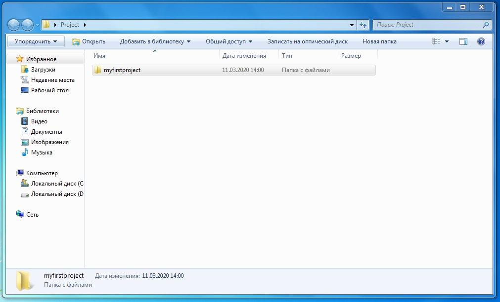
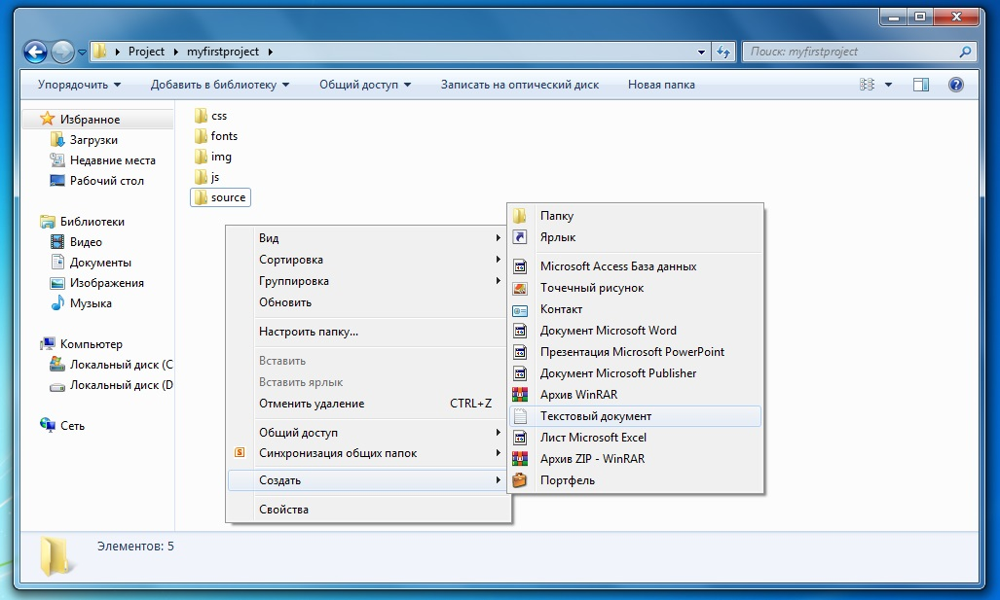
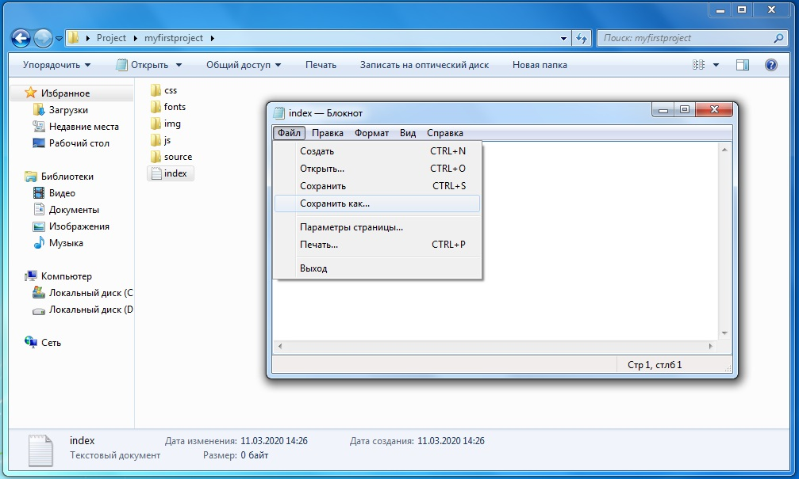
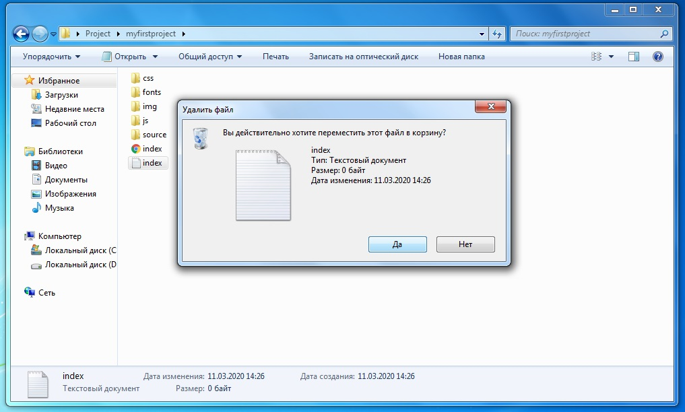

Организовка файлов
Для начала нужно правильно организовать систему файлов
Это делается для того, чтобы создавая большие проекты, не запутаться в ваших файлах
Для начала создадим папку, в которой вы будете хранить все ваши проекты
Для каждого нового проекта, создавайте новые папки. Называйте её так, как вам будет удобно. Главное чтобы вы сами не запутились:)
Теперь нужно создать несколько нужных вам папок для исходников.
Исходники- это различные материалы для работы, это могут быть и макеты дизайна, текст с ТЗ(техническое задание), шрифты, картинки, вообще все те материалы предоставленные заказчиком
Для работы непосредственно с сайтом нам нужно создать текстовый документ с названием "index.html".
Теперь нам нужно зайти в этот файл с помощью Блокнота. Далее нам нужно выбрать "Файл"->"Сохранить как"
В "Тип файла:" выбираем "Все файлы", и дописываем расширение ".html", для других файлов проводятся те же самые телодвижения, но используются другие расширения
- ".css"
- ".js"
- ".php"
ПОЗДРАВЛЯЮ! Вы создали свой html документ, теперь со спокойной душой можете удалять тот текстовый файл:)
А теперь, чтобы вам что-то в нем изменить, вам нужно установить любой текстовый редактор
- Sublime Text(3)
- Visual Studio Code
- Atom
Создатели учебника настоятельно рекомендуют для junior-web-developer использовать Sublime text(3) Почему? Мы вам это расскажем в следующей статье